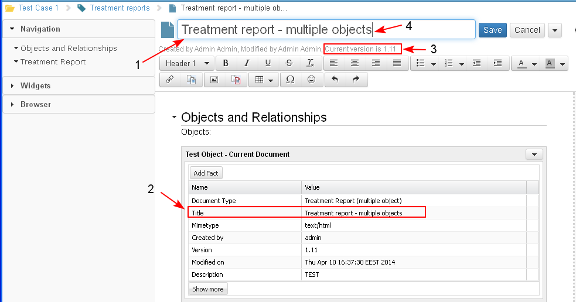

The user cannot not insert the Object Title widget in a document. It is inserted by default in the default section and cannot be removed or moved.
The Object Title widget is the only widget that exists in the default section. Actually this widget represents the document as an object.
(Not Ready) The user could set up the basic information to be displayed in the Title section of the document - ID, Title, Status, Created By, Created from. The only information that could not be removed from the title section is the ID.
Only the information, allowed for editing in the object definition, could be edited by the user in the Object Title widget.
- The user opens the document in edit mode and edits the title of the document from the Object Title widget (1). This could be done also from the Object Data widget (editing the document properties).
The same title is displayed in the Object data widget (2). In the example the version of that document is 1.11 (3). The user selects the Title widget (4).

- The user edits the title (1) and clicks the "Save" (2) button.

- The system saves the changes in the document.
- The title of the document is changed. This is visible in the Title widget (1) and in the Object Data widget (2).
- The current version of the document is changed automatically. This is visible in the Title widget (3) and in the Object Data widget (4).
When different widgets use one and the same data and that data is updated in one of the widgets, then it is updated also for the other widget/s automatically.

In the Title widget is displayed also:
- full list of actions (1-2) that could be performed on the document as an object, based on the user permissions (Move, Print, Export, Clone, Lock, etc.).
The list of actions on the document as an object are visible only when the document is in Preview mode.
- action/s (3) that could be performed on the document content (Edit, Save, Cancel), based on the user permissions and on the current mode of the the document (preview or edit).
an icon of the object (4) that is represented with the intelligent document.